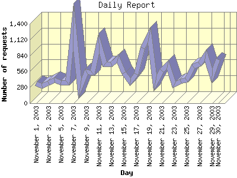

Report generated by Analog 5.91beta1 and Report Magic 2.21
|
Web Server Statistics for "Harish Narayanan (hnarayan) - November 2003" Report generated by Analog 5.91beta1 and Report Magic 2.21 |
The Daily Report identifies the activity for each day within the reporting period. Remember that one page hit can result in several server requests as the images for each page are loaded.

| Day | Number of requests | Number of bytes transferred | Percentage of the bytes | Percentage of the requests | |
|---|---|---|---|---|---|
| 1. | November 1, 2003 | 344 | 7.294 MB | 2.67% | 1.93% |
| 2. | November 2, 2003 | 301 | 8.962 MB | 3.28% | 1.69% |
| 3. | November 3, 2003 | 356 | 9.246 MB | 3.38% | 2.00% |
| 4. | November 4, 2003 | 404 | 9.170 MB | 3.36% | 2.27% |
| 5. | November 5, 2003 | 368 | 6.554 MB | 2.40% | 2.07% |
| 6. | November 6, 2003 | 363 | 8.123 MB | 2.97% | 2.04% |
| 7. | November 7, 2003 | 1,356 | 19.811 MB | 7.25% | 7.62% |
| 8. | November 8, 2003 | 259 | 6.705 MB | 2.46% | 1.46% |
| 9. | November 9, 2003 | 550 | 6.741 MB | 2.47% | 3.09% |
| 10. | November 10, 2003 | 531 | 8.082 MB | 2.96% | 2.98% |
| 11. | November 11, 2003 | 1,057 | 14.980 MB | 5.48% | 5.94% |
| 12. | November 12, 2003 | 686 | 12.720 MB | 4.66% | 3.85% |
| 13. | November 13, 2003 | 688 | 9.339 MB | 3.42% | 3.87% |
| 14. | November 14, 2003 | 780 | 14.848 MB | 5.44% | 4.38% |
| 15. | November 15, 2003 | 528 | 4.991 MB | 1.83% | 2.97% |
| 16. | November 16, 2003 | 378 | 4.591 MB | 1.68% | 2.12% |
| 17. | November 17, 2003 | 512 | 9.914 MB | 3.63% | 2.88% |
| 18. | November 18, 2003 | 972 | 10.935 MB | 4.00% | 5.46% |
| 19. | November 19, 2003 | 1,200 | 15.081 MB | 5.52% | 6.74% |
| 20. | November 20, 2003 | 359 | 3.885 MB | 1.42% | 2.02% |
| 21. | November 21, 2003 | 572 | 4.619 MB | 1.69% | 3.21% |
| 22. | November 22, 2003 | 676 | 10.630 MB | 3.89% | 3.80% |
| 23. | November 23, 2003 | 319 | 3.966 MB | 1.45% | 1.79% |
| 24. | November 24, 2003 | 388 | 3.698 MB | 1.35% | 2.18% |
| 25. | November 25, 2003 | 412 | 2.992 MB | 1.09% | 2.31% |
| 26. | November 26, 2003 | 652 | 15.094 MB | 5.53% | 3.66% |
| 27. | November 27, 2003 | 692 | 16.783 MB | 6.14% | 3.89% |
| 28. | November 28, 2003 | 845 | 6.781 MB | 2.48% | 4.75% |
| 29. | November 29, 2003 | 481 | 7.478 MB | 2.74% | 2.70% |
| 30. | November 30, 2003 | 774 | 9.154 MB | 3.35% | 4.35% |
Most active day November 7, 2003 : 460 pages sent. 1,356 requests handled. 20,772,990.00 served.
Daily average: 593 requests handled. 9.106 MB served.
This report was generated on January 18, 2004 18:29.
Report time frame November 1, 2003 00:43 to November 30, 2003 23:58.
| Web statistics report produced by: | |
 Analog 5.91beta1 Analog 5.91beta1 |  Report Magic 2.21 Report Magic 2.21 |